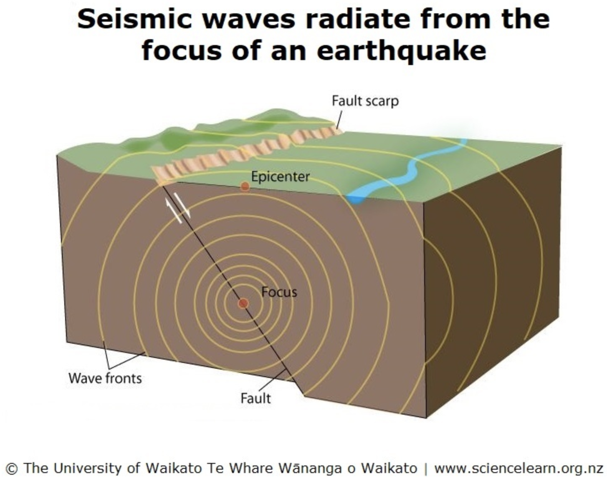
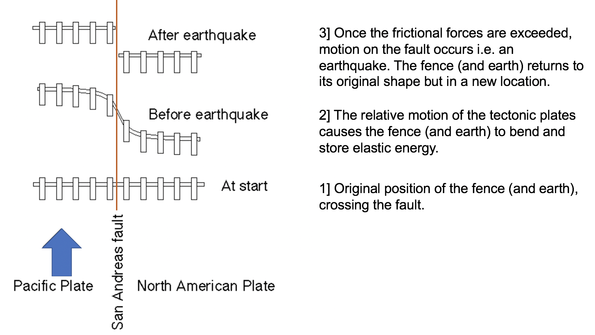
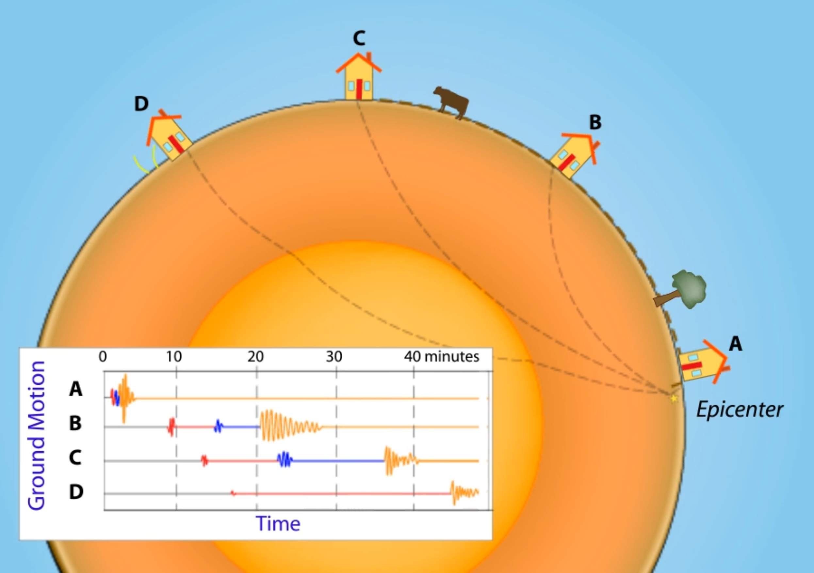
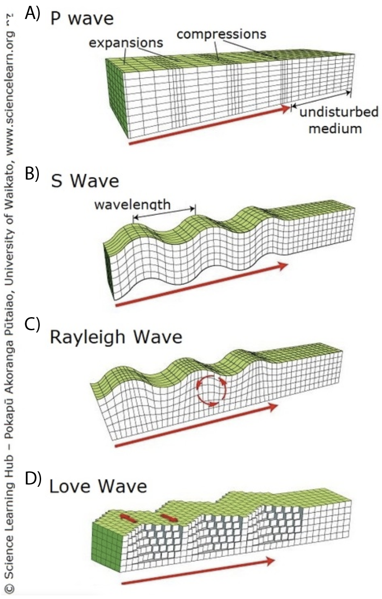
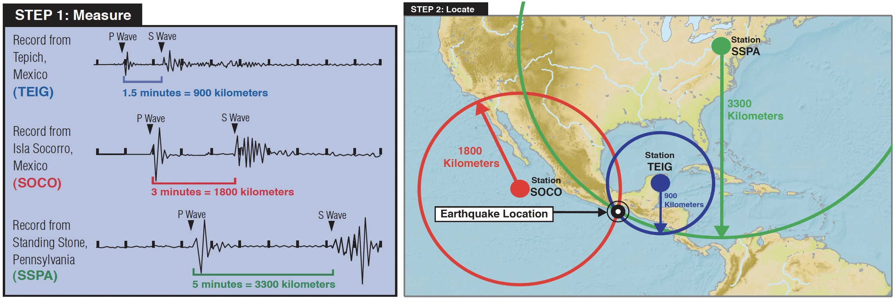
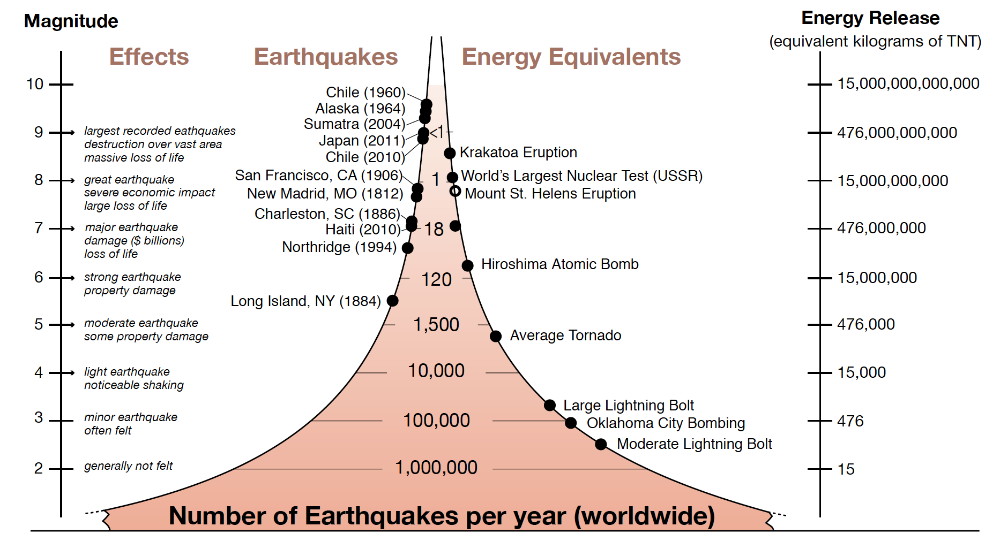
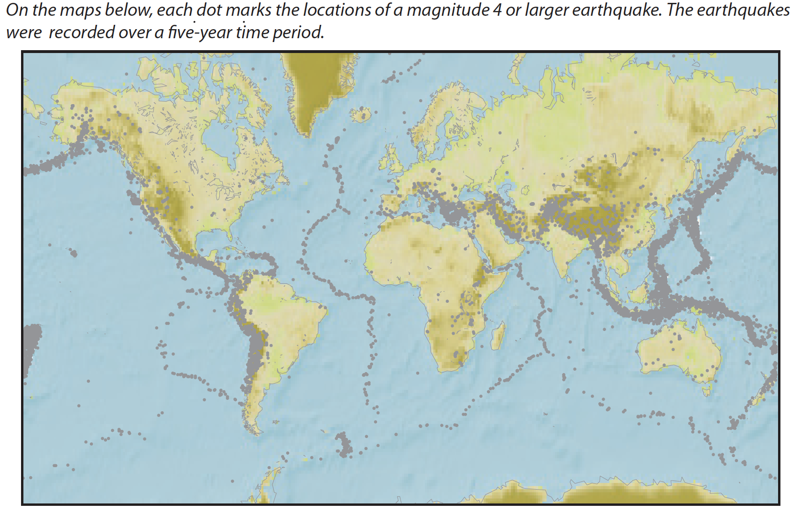
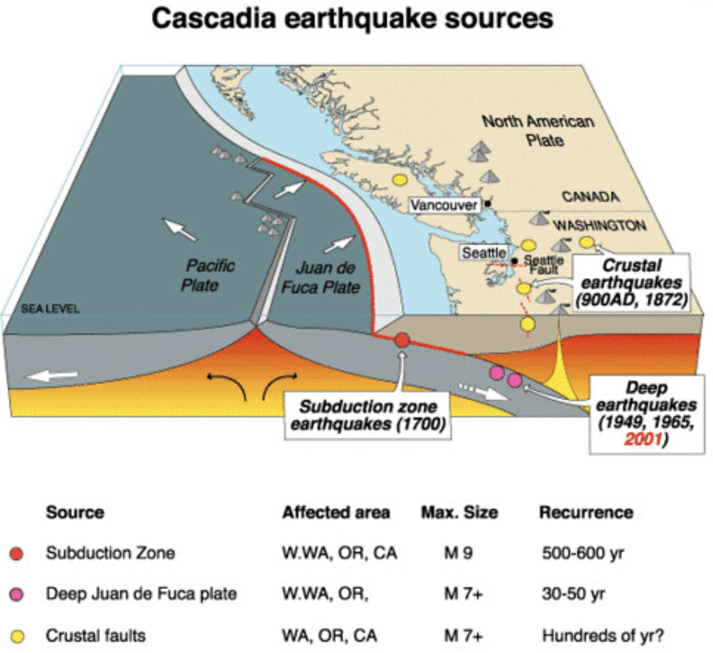

3.2 Earthquakes and Seismology¶
Goal: Build background knowledge about seismology to introduce and motivate earth science questions that we can study using data science computational methods. More in-depth material on these topics can be studied in EPS20 Earthquakes in Your Backyard and EPS130 Strong Motion Seismology.
Outline:
What is an Earthquake
Elastic/Plastic Deformation
Seismic Waves
Locating Earthquakes
Earthquake Magnitude
Where Earthquakes Occur
Additional Assigned Reading¶
IRIS info page on how seismic waves travel through the earth.
What is an Earthquake¶
As you have possibly experienced, an earthquake is ground shaking caused by the sudden movement of one block of rock relative to another along a fracture in Earth’s crust called a fault. Frictional forces usually keep faults from rupturing, and they can spend large amounts of time locked. Stress on the fault accumulates and at some point slippage occurs. The hypocenter is the location within the crust where the earthquake rupture occurs, and the epicenter is the point on Earth’s surface directly above the hypocenter (Figure 1).
Watch this video defining epicenter and hypocenter (or focus)


Figure 1: Definitions of fault, hypocenter, and epicenter. Source: Source: Science Learning Hub The University of Waikato Te Whare Wānanga o Waikato
Thousands of earthquakes occur every day, but most are too small to be felt by humans. Larger magnitude earthquakes occur less frequently, only about 15 magnitude 7 or larger (M_W≥7) earthquakes occur each year. Large main shock earthquakes are followed by smaller aftershock earthquakes as the crust adjusts to the main shock displacement. Aftershocks decrease in size and frequency with time after the main shock.
Deformation¶
The elastic/plastic properties of earth materials are what allow earthquakes to occur and seismic waves to propagate. When a force is applied to a material, it deforms. Unless the force exceeds a critical value, the deformation is reversible, and the material will return to its original shape if the force is removed. This is elastic deformation (imagine a pencil being bent). The force acting on the material is called stress, and the change in shape of the material due to this stress is strain. Once a material is deformed beyond its elastic limit it will not recover its original shape when the stress is removed, this is plastic deformation (imagine a paper clip being bent). Unlike elastic deformation, plastic deformation is permanent. If the stress exceeds the strength of the material, failure occurs (Figure 2).
Watch this video about elastic rebound

Earth materials are not perfectly elastic. They are viscoelastic, so failure can be brittle (without much plastic deformation) or ductile (with more plastic deformation) depending on the rate at which the stress is applied. Imagine silly putty: if you snap it quickly with will crack, but if you pull it more slowly it will stretch before breaking. An earthquake occurs when the tectonic stress exceeds the strength of the crustal material and failure occurs. Earthquake rupture is localized to a portion of a fault – the whole length of fault does not slip at once. Further away from the hypocenter, seismic waves propagate through the earth by elastically deforming the materials as they spread.

Figure 2: Elastic rebound. Source: Modified from USGS
Watch this video about brittle vs. ductile deformation

Seismic Waves¶
Seismic waves are measured by seismometers as they pass. The record of ground motion due to seismic waves is called a seismogram. There are two types of seismic waves defined by how they travel through Earth: body waves travel through Earth’s interior and surface waves travel though the rock just below Earth’s surface (Figure 3). These two types of seismic waves are further characterized by the ground motions they cause as they propagate. There are two forms of body waves: P waves (primary waves) and S waves (secondary waves). As their names imply, P waves travel more rapidly than S waves and arrive at a seismometer station first. P waves travel by compressing the earth causing it to squeeze and stretch in the direction the wave is traveling i.e. volume changes (Figure 4 A). S waves displace/shear material perpendicular to the direction of wave propagation i.e. shape changes (Figure 4 B). P waves can travel through solids, liquids, and gases; S waves cannot travel through fluids (liquid and gas) because these materials do not resist stresses that cause changes in shape and do not elastically rebound. There are also two forms of surface waves: Rayleigh waves and Love waves. Rayleigh waves cause the ground to displace in a rolling motion (Figure 4 C). Love waves cause side to side motion perpendicular to the direction of wave propagation (Figure 4 D). As can be seen in the seismograms in Figure 3, body waves are faster than surface waves and arrive first. Surface waves are larger in amplitude and cause more ground motion for a longer time period (and therefore more destruction).

Figure 3: Seismograms recorded at three station locations, logging the body and surface waves produced by an earthquake. Source: IRIS

Figure 4: Illustrations of the ground motion due to P and S body waves and due to Rayleigh and Love surface waves. Source: Science Learning Hub The University of Waikato Te Whare Wānanga o Waikato
Locating Earthquakes¶
The differences in the velocities of seismic waves allows seismologists to locate the hypocenter of the earthquake. The difference between arrival times of the P and S waves is used to determine the distance from that seismometer station to the earthquake epicenter. With three seismogram recordings (or more) from different stations the location of the epicenter can be triangulated (Figure 5). With modern seismic instruments and networks this can be done quickly, which can help along with estimates of the earthquake magnitude determine the hazard the earthquake has caused. Earthquakes that occur near areas with high population density impact humans more than earthquakes that occur in remote areas.
Watch this video about travel time curves


Figure 5: Travel times of P and S waves with increasing distance from an earthquake epicenter. Location of earthquake epicenter determined by triangulation. Source: IRIS
Magnitude of Earthquakes¶
The displacement recorded in seismograms can also be used to estimate the size of the earthquake i.e. its magnitude. The magnitude of an earthquake indicates the amount of energy released. Larger earthquakes produce larger ground motions, and therefore seismogram signals with greater amplitude and duration. The moment magnitude (\(M_{W}\)) depends on the amount of slip on the fault, the area of the fault that slipped, and the strength of the local rocks. Each unit increase in magnitude is a 10x increase in ground motion, and a 32x increase in energy released (Figure 6). The most powerful earthquake ever recorded had a \(M_{W}\)=9.5 and occurred in 1960 in Chile.
Watch this video about earthquake magnitudes


Figure 6: Frequency and energy released by earthquakes of different magnitudes. Source: IRIS
Where Earthquakes Occur¶
Earthquake epicenters are not uniformly distributed across Earth’s surface (Figure 7). They mostly occur along narrow interplate zones. Tectonic stresses at plate boundaries generate these earthquakes. Away from their margins tectonic plates are largely aseismic; only ~1% of global seismicity is due to intraplate earthquakes. Intraplate earthquakes can still be destructive, because they are rare infrastructure is often unprepared. Earthquakes are also classified by their depth. Shallow earthquakes (< 70 km deep) occur at all seismically active, interplate zones. At oceanic ridges only shallow earthquakes occur. Intermediate (70 – 300 km) and deep (>300 km) earthquakes only occur with plate subduction. The Wadati – Benioff zone is a zone of seismicity 30 – 40 km thick in the upper portion of a subducting slab (Figure 8). Determining the Wadati – Benioff zone for a subducting plate allows the imaging of the plunge angle of the subducting plate beneath the overriding plate (usually 30° – 60°). The largest magnitude earthquakes occur in this environment. The compression and friction between the two plates make earthquakes infrequent, more stress accumulates between failures, and the energy released by the earthquake when it occurs is larger (i.e. larger magnitude).

Figure 7: Distribution of earthquake epicenters. Source: IRIS

Figure 8: Cross-section of a subduction zone with areas of seismicity labeled. Source: PNSN
Further Reading (Optional)¶
Chapter 3.5: Earthquake Seismology (pg. 148 – 170) of Fundamentals of Geophysics Lowrie, W. (2007). Fundamentals of Geophysics, 2nd Edition. Cambridge, UK: Cambridge University Press.
Chapter 9: Plotting and Visualization, Python for Data Analysis McKinney, W. (2018). Python for Data Analysis: Data Wrangling with Pandas, NumPy, and IPython, 2nd Edition. Sebastopol, CA: O’Reilly Media, Inc.